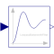

LowpassButterworthOutput the input signal filtered with a low pass Butterworth filter of any order |

|
Information
This information is part of the Modelica Standard Library maintained by the Modelica Association.
This block defines the transfer function between the input u and the output y as an n-th order low pass filter with Butterworth characteristics and cut-off frequency f. It is implemented as a series of second order filters and a first order filter. Butterworth filters have the feature that the amplitude at the cut-off frequency f is 1/sqrt(2) (= 3 dB), i.e., they are always "normalized". Step responses of the Butterworth filter of different orders are shown in the next figure:

If transients at the simulation start shall be avoided, the filter should be initialized in steady state (e.g., using option initType=Modelica.Blocks.Types.Init.SteadyState).
Parameters (7)
| n |
Value: 2 Type: Integer Description: Order of filter |
|---|---|
| f |
Value: Type: Frequency (Hz) Description: Cut-off frequency |
| initType |
Value: Modelica.Blocks.Types.Init.NoInit Type: Init Description: Type of initialization (1: no init, 2: steady state, 3: initial state, 4: initial output) |
| x1_start |
Value: zeros(m) Type: Real[m] Description: Initial or guess values of states 1 (der(x1)=x2) |
| x2_start |
Value: zeros(m) Type: Real[m] Description: Initial or guess values of states 2 |
| xr_start |
Value: 0.0 Type: Real Description: Initial or guess value of real pole for uneven order otherwise dummy |
| y_start |
Value: 0.0 Type: Real Description: Initial value of output (states are initialized in steady state if possible) |
Outputs (3)
| x1 |
Type: Real[m] Description: States 1 of second order filters (der(x1) = x2) |
|---|---|
| x2 |
Type: Real[m] Description: States 2 of second order filters |
| xr |
Type: Real Description: State of real pole for uneven order otherwise dummy |
Connectors (2)
| u |
Type: RealInput Description: Connector of Real input signal |
|
|---|---|---|
| y |
Type: RealOutput Description: Connector of Real output signal |